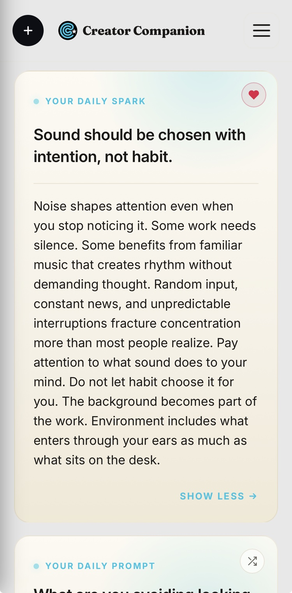

Your daily creative practice
Three pages, every morning, before the day pulls you away. Creator Companion turns the habit into a streak you won't want to break — private, calm, and built for any creative practice.
Morning pages are three pages of longhand, stream-of-consciousness writing done first thing each morning — a practice Julia Cameron made famous in The Artist's Way. You're not writing for an audience or a finished piece. You're clearing the mental clutter so the real work can surface. Painters, musicians, writers, and filmmakers all use it as a warm-up for the day.
The catch is consistency. The pages only work if you actually do them — most mornings, not just the inspired ones. That's the part Creator Companion is built to solve.
A streak counter and milestone badges turn showing up into momentum. Miss a day? A 48-hour grace window and a gentle restart keep one off-morning from becoming the end.
No social feed, no public profiles, no ads, no one mining your words. Your pages are encrypted and yours — export or delete everything whenever you like.
Set a daily reminder for the moment that fits your morning, and get a small spark of encouragement to lower the bar and just begin.

One tap to a blank page and a gentle prompt. No setup, no blank-canvas dread.
Type freely until the noise quiets. It doesn't have to be good — it just has to be done.
Watch the chain grow, day after day, and let the habit start carrying you.
Three pages of longhand, stream-of-consciousness writing done first thing each morning — a practice popularized by Julia Cameron in The Artist's Way. The goal isn't a finished piece; it's to clear your head and prime your creativity. Creator Companion brings the ritual to any device and any creative practice.
No. The original practice is longhand, but the point is the daily ritual, not the medium. With Creator Companion you type your pages on your phone or computer, and the streak keeps you coming back.
Yes. Creator Companion has no social feed, no public profiles, and no advertising. Your pages are encrypted and yours alone — you can export or delete everything at any time.
Start with a 10-day free trial. After that it's $5.99/month or $49.99/year. One simple plan, no upsells.
Ten days free. No credit card to start.
Start your free trial